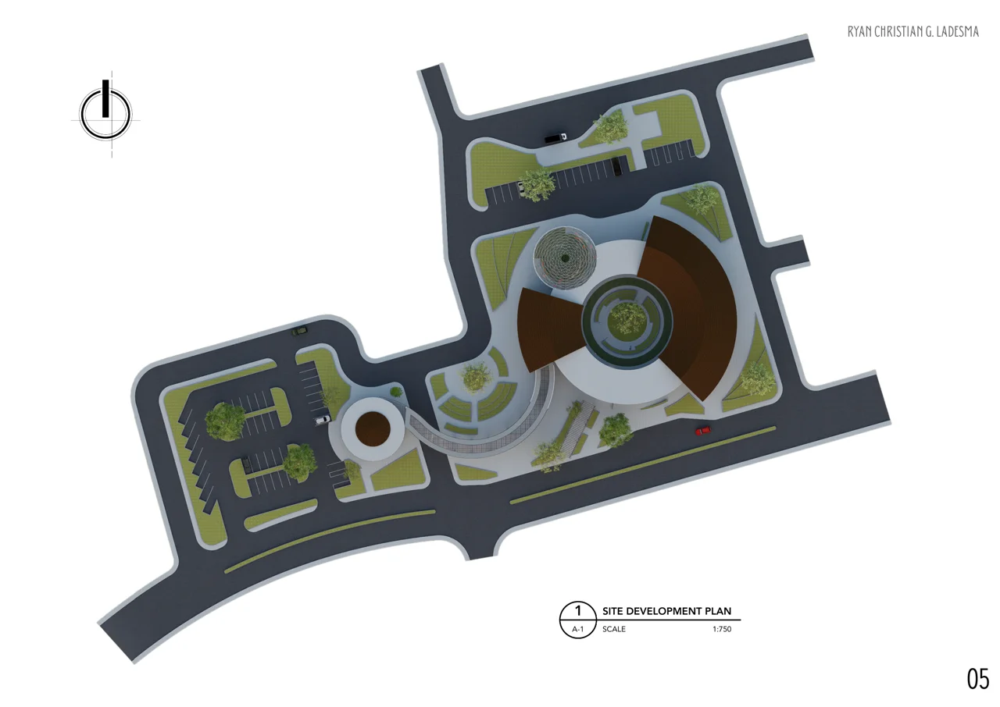
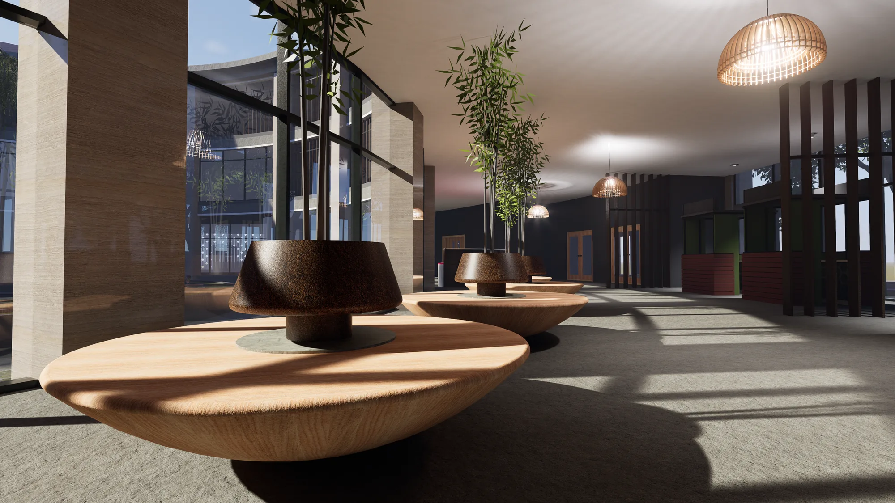
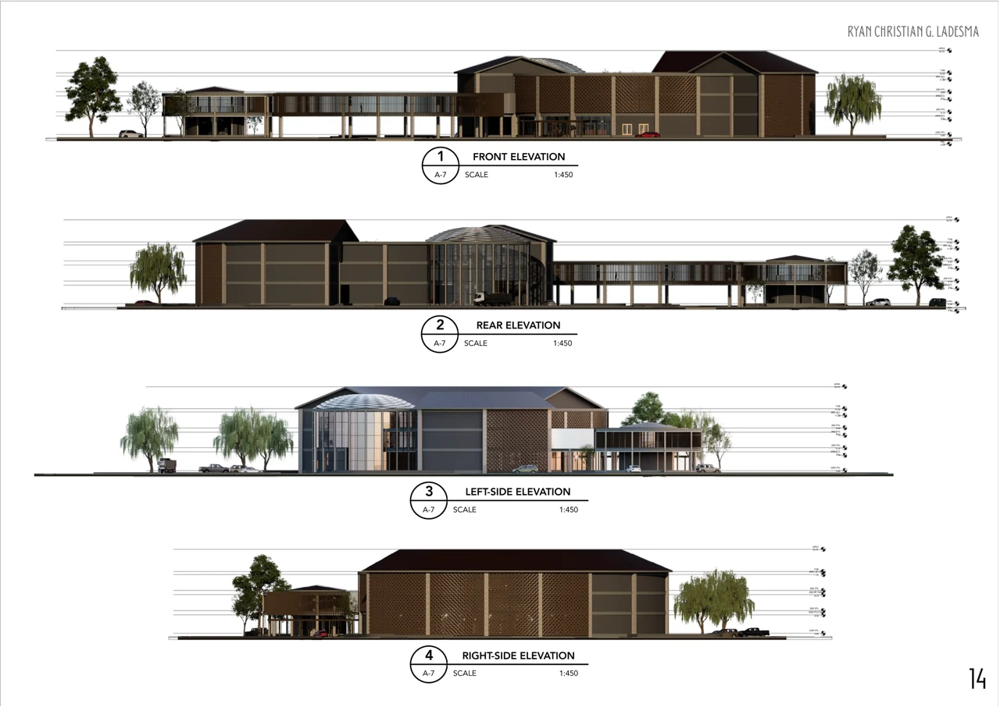
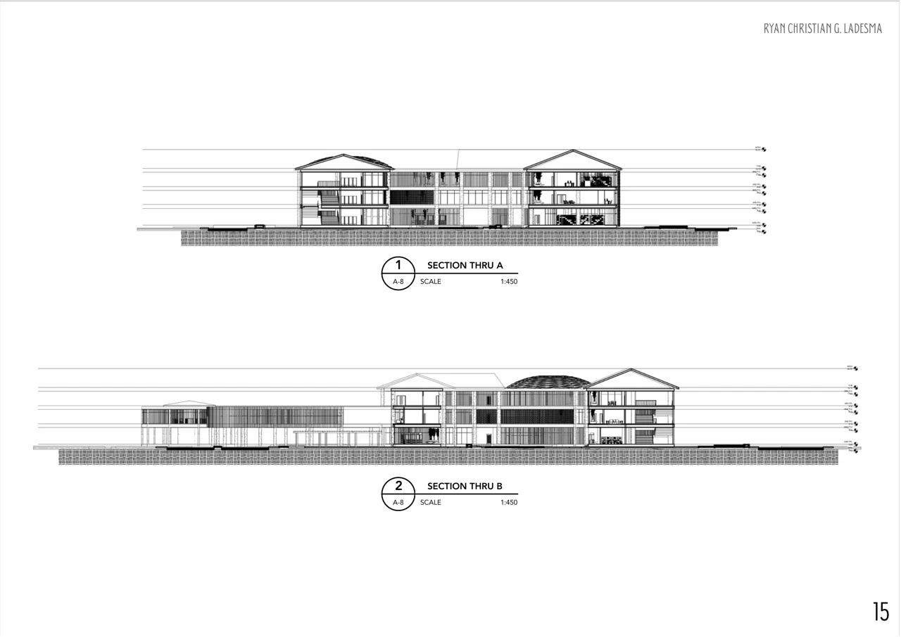

Salupod community library
A proposed library in Santor, Malolos, with a landscaped atrium connecting reading rooms and community spaces.
A library around a shared center
A landscaped central atrium connects reading areas, discussion rooms, and community spaces. The circular plan brings people and nature around a shared center.
Site development plan
The proposed arrangement of buildings, circulation, and outdoor spaces.

Library materials
Wood cladding, natural stone, and low-E glass form the material palette. Reading spaces surround the planted central atrium.

Floor plan
Spatial organization and circulation, shown in the original architectural drawing.
Building elevations
Facade proportions and levels from the proposed design.

Building sections
Vertical relationships, floor levels, and interior volumes.
